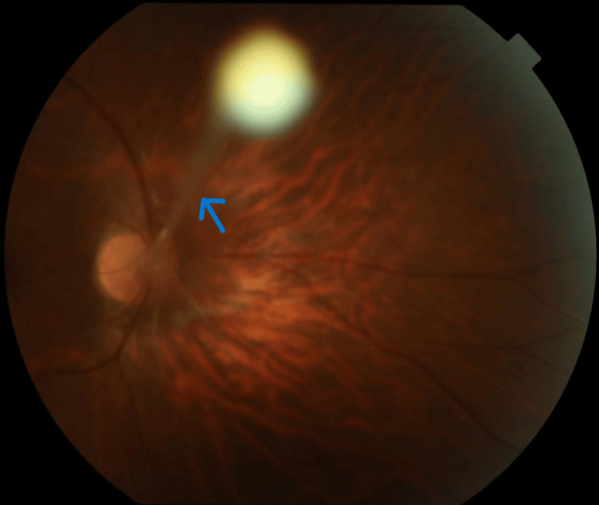
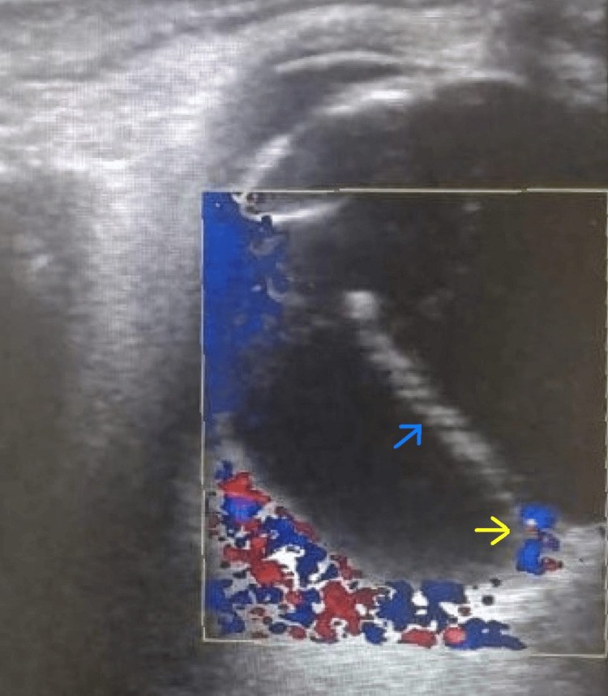
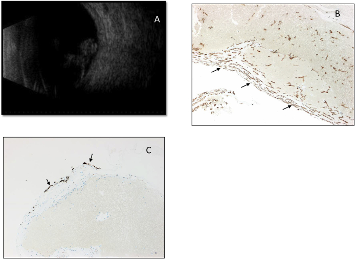

413 — Tồn tại tuần hoàn bào thai (PFV/PHPV): dây xơ dịch kính + nhãn cầu nhỏ / Persistent fetal vasculature
Tags: pattern:leukocoria pattern:day-xo-dich-kinh pattern:nhan-cau-nho vung:nhan-cau vung:tre-em protocol:B-scan protocol:UBM protocol:Doppler-mau protocol:MRI-hoc-mat
Mức chắc chắn (certainty): tổng hợp y văn (literature synthesis) — tổng hợp từ y văn mở 2020–2026 (Cureus 2024, Ophthalmol Ther 2025, Am J Ophthalmol Case Rep 2020, Ophthalmol Ther 2023, Int J Ophthalmol 2023); có gắn hình thái ca nguyên văn (ảnh đáy mắt, siêu âm Doppler, B-scan + hoá mô miễn dịch) nhưng nội dung nhóm tự biên.
1. Tổng quan — dây xơ "không chịu chết" của hệ hyaloid
- Bệnh học (pathology): trong bào thai, động mạch hyaloid (hyaloid artery) chạy từ đĩa thị tới bao thể thủy tinh (posterior lens capsule), nuôi mạng mạch bao thể thủy tinh (tunica vasculosa lentis) và dịch kính nguyên thủy (primary vitreous). Bình thường chuỗi này thoái triển bằng apoptosis trong tam cá nguyệt 2–3 (động mạch hyaloid thoái triển khoảng tuần 8–9, mạng mạch bao thể thủy tinh tới khoảng tuần 28–35). PFV (persistent fetal vasculature; tên cũ "PHPV" — persistent hyperplastic primary vitreous, nay không dùng) = chuỗi thoái triển không hoàn tất → còn dây xơ–mạch (fibrovascular stalk) dính đĩa thị với mặt sau thể thủy tinh, kèm màng sau thể thủy tinh và mô xơ trong dịch kính.
- TẠI SAO ra hình ảnh (theo Argon):
- Tăng hồi âm trên B-scan: dây xơ là collagen đặc + myofibroblast (SMA dương) + tế bào glia (GFAP dương) — mô đặc, nhiều giao diện phản xạ nên tăng hồi âm rõ, khác dịch kính trong (trống âm). Vì là mô xơ–cơ, không phải canxi, nên KHÔNG có bóng lưng kiểu vôi hóa như retinoblastoma.
- Có tín hiệu mạch trên Doppler màu: trong dây xơ còn mao mạch/động mạch hyaloid tồn dư → phổ động mạch trong dây. Đây là điểm phân biệt với dải xơ vô mạch (toxocariasis, sẹo) và với màng co kéo vô mạch của FEVR.
- Nhãn cầu nhỏ (microphthalmia): mô xơ–mạch chiếm chỗ trong dịch kính + thể thủy tinh bị kéo/đục sớm → giảm phát triển thể tích nhãn cầu; trong cohort phẫu thuật PFV, trục nhãn cầu (axial length, AL) trung vị 17 mm ở nhóm bong võng mạc vs 20 mm ở nhóm không bong (p = 0,002) — AL ngắn là yếu tố nguy cơ bong võng mạc hậu phẫu.
- Đục thể thủy tinh + glaucoma: màng xơ sau thể thủy tinh co kéo bao sau → đục thể thủy tinh; mỏm thể mi dài ra (elongated ciliary processes) bị kéo về trung tâm → góc đóng, glaucoma (25% bệnh nhân / 65% mắt trong một cohort 76 mắt).
- Xuất huyết dịch kính: mạch trong dây xơ dễ vỡ (tự phát hoặc sau chấn thương nhẹ) → máu trong dây xơ tổ chức hóa, hemosiderin trong mô (đã chứng minh trên hoá mô miễn dịch).
- Ngưỡng định lượng cần nhớ:
- Một bên tới ~90%; thể hai bên ~10% (gợi ý khám sàng lọc và nghĩ hội chứng — Norrie, incontinentia pigmenti, OFCD/BCOR).
- Phân thể theo giải phẫu: thuần trước 24%, thuần sau 12%, phối hợp 60% (một nguồn khác: phối hợp 74% / trước 26% ở cohort phẫu thuật) — thể phối hợp là hay gặp nhất.
- Tuổi mổ trung vị trong cohort lớn: 6,0 tháng (khoảng 0,7–82 tháng); 37% mắt PFV sau/phối hợp đạt thị lực tốt hơn "đếm ngón tay".
- Sau mổ đục thể thủy tinh ở PFV: đường vào giác mạc (corneal) giảm nguy cơ bong võng mạc so với pars plicata — OR 0,08 (95% CI 0,01–0,6), p = 0,011.
2. Mẫu hình + chẩn đoán phân biệt theo vị trí (gamut)
- PFV thể TRƯỚC (anterior): đục thể thủy tinh bẩm sinh + màng xơ sau thể thủy tinh + mỏm thể mi dài, kéo về trung tâm + tiền phòng nông + glaucoma + nhãn cầu nhỏ. Trên UBM: dải xơ nối bao sau thể thủy tinh với mỏm thể mi.
- PFV thể SAU (posterior): dây xơ từ đĩa thị ra trước vào dịch kính, nếp gấp võng mạc (retinal fold), giảm sản hoàng điểm/đĩa thị, bong võng mạc co kéo. Trên B-scan: dây tăng hồi âm neo vào đĩa thị — đây là dấu định vị mạnh nhất.
- PFV thể PHỐI HỢP (combined): cả hai — hay gặp nhất, tiên lượng thị lực kém nhất.
- Biến thể "PFV sau thể cận thị" (myopic posterior PFV): người trẻ lớn/người lớn, một bên, cận thị lệch khúc xạ (anisometropic amblyopia), dây xơ mảnh, thị lực còn tốt — dễ bị bỏ qua vì không leukocoria rầm rộ. Không loại PFV chỉ vì bệnh nhân đã lớn.
- Gamut "ánh đồng tử trắng (leukocoria) ở trẻ" — 4 trục phân loại: (1) có vôi hóa thô + khối đặc → retinoblastoma; (2) nhãn cầu nhỏ + dây xơ từ đĩa thị → PFV; (3) xuất tiết lipid + giãn mạch → Coats; (4) tiền sử sinh non + ranh giới mạch vô mạch ngoại vi → ROP 5. Trục phụ: một bên + đủ tháng + không vôi hóa nghiêng PFV/Coats/FEVR; hai bên + điếc/chậm phát triển nghiêng Norrie/incontinentia pigmenti.
3. Bảng so sánh phân biệt (ma trận đối chiếu)
| Thực thể (entity) | Hình ảnh điển hình | Chốt vào (rule-in) | Chốt loại (rule-out) | Gợi ý xác nhận |
|---|---|---|---|---|
| PFV / PHPV | Dây xơ tăng hồi âm từ đĩa thị → bao sau thể thủy tinh, nhãn cầu nhỏ (AL ngắn), có mạch trong dây trên Doppler, đục thể thủy tinh, mỏm thể mi dài; không vôi hóa | Dây xơ neo đĩa thị + nhãn cầu nhỏ + một bên + không vôi hóa | Vôi hóa thô trong khối → RB; xuất tiết lipid lan tỏa → Coats | B-scan + Doppler màu; UBM thể trước; MRI hốc mắt khi cần loại RB |
| Retinoblastoma | Khối đặc trong nhãn cầu + vôi hóa thô (> 90% ca), có thể gieo rắc dịch kính (seeding), calci hóa thành đám | Vôi hóa thô + khối đặc + tuổi < 5 (trung vị 18–24 tháng) | Nhãn cầu nhỏ + dây xơ mảnh không khối → PFV | CT/MRI (ưu tiên MRI), không sinh thiết nội nhãn, gen RB1 |
| Coats disease | Giãn mạch–teo mao mạch + xuất tiết lipid dưới võng mạc, bong võng mạc xuất tiết; không khối đặc, không vôi hóa | Nam, một bên, xuất tiết lipid + telangiectasia | Khối đặc có mạch trong lòng → u | FA (telangiectasia, vô mạch ngoại vi), siêu âm |
| ROP giai đoạn 5 | Bong võng mạc toàn phần, màng co kéo, tiền sử sinh non/nuôi oxy | Sinh non + bệnh cảnh oxy + ranh giới mạch–vô mạch | Đủ tháng + dây xơ đĩa thị → PFV | Hồ sơ sơ sinh, FA |
| FEVR | Vô mạch ngoại vi + tân mạch/bong co kéo, thường hai bên, tiền sử gia đình | Hai bên + gia đình + vô mạch ngoại vi | Một bên + dây xơ đĩa thị → PFV | FA, gen FZD4/LRP5/TSPAN12/NDP |
| Toxocariasis nội nhãn | U hạt ngoại vi + dải xơ co kéo tới đĩa thị, viêm dịch kính; dây vô mạch | U hạt + dải co kéo + ELISA Toxocara (+) | Dây xơ có mạch, từ đĩa thị ra trước → PFV | ELISA, B-scan/UBM |
| Norrie / incontinentia pigmenti | Bong võng mạc hai bên sớm, cuống giống PFV, "pumpkin" lesion | Hai bên + điếc/chậm phát triển (Norrie) hoặc da–răng–tóc (IP) | Một bên, không toàn thân → PFV đơn độc | Gen NDP/IKBKG, MRI não, tai mũi họng |

Đáy mắt màu: dây xơ (mũi tên xanh) chạy từ đĩa thị về phía trước vào dịch kính — trục định vị của PFV thể sau. Nguồn: Shrivastava AK et al., Cureus 2024, PMC11103449 Fig. 2, CC BY 4.0.Ba dấu hiệu "chốt" trên hình ảnh
- Neo đĩa thị (disc-anchored stalk): dây xơ bắt đầu từ đĩa thị — khác màng sau thể thủy tinh đơn thuần và khác dải co kéo từ u hạt ngoại vi (toxocariasis).
- Một nhãn cầu nhỏ hơn bên đối diện (AL ngắn): đo AL cả hai mắt; chênh lệch ≥ 1 mm đã có ý nghĩa định hướng, và AL càng ngắn càng nguy cơ bong võng mạc (17 vs 20 mm).
- Tín hiệu mạch trong dây (Doppler): chứng minh mô mạch tồn dư, không phải sẹo xơ vô mạch.
4. Protocol chụp + phân loại & ngưỡng xử trí
- Khám dưới mê (examination under anesthesia, EUA) là chuẩn vàng ở trẻ: đo nhãn áp, AL, soi đáy mắt 360°, siêu âm B-scan, UBM.
- Siêu âm B-scan (đầu dò 10–12 MHz, qua mí): tìm dây xơ neo đĩa thị, nếp gấp võng mạc, bong võng mạc, xuất huyết; đo AL hai mắt cùng lúc.
- UBM (35–50 MHz): bắt buộc khi nghi thể trước — thấy màng xơ sau thể thủy tinh, mỏm thể mi dài, tiền phòng nông, góc đóng.
- Doppler màu: xác nhận mạch trong dây; đồng thời đo dòng chảy động mạch mắt nếu nghi thiếu máu nhãn cầu.
- MRI hốc mắt (không cản từ): khi cần loại retinoblastoma (khối đặc, vôi hóa thấy trên CT nhưng nhạy từ tính "blooming" trên MRI), đánh giá lan ngoài nhãn cầu. CT chỉ khi câu hỏi duy nhất là vôi hóa và luôn cân nhắc ALARA ở trẻ.
- Phân loại dùng trong thực hành (không phải RADS): trước / sau / phối hợp theo vị trí mô tồn dư, kèm 3 mức độ nặng: nhẹ (dây mảnh, thị lực còn) — trung bình (đục thể thủy tinh, màng sau thể thủy tinh) — nặng (bong võng mạc co kéo, glaucoma).
- Ngưỡng xử trí:
- Đục thể thủy tinh che trục thị giác + thể trước → phẫu thuật sớm (lensectomy ± vitrectomy); cohort lớn mổ trung vị 6 tháng tuổi, và mổ sớm + đo AL trước mổ là yếu tố tiên lượng.
- Đường vào: ưu tiên giác mạc (corneal) khi có thể — giảm bong võng mạc hậu phẫu (OR 0,08); tránh pars plicata ở mắt AL rất ngắn vì nguy cơ bong võng mạc cao (AL 17 vs 20 mm).
- Bong võng mạc co kéo → vitrectomy; glaucoma → kiểm soát nhãn áp (thuốc, có thể phẫu thuật lọc).
- Nhược thị → chỉnh khúc xạ + che/bịt mắt sau khi giải phóng trục thị giác; đây là phần quyết định thị lực chức năng.
- Ức chế VEGF nội dịch kính: chỉ có báo cáo ca, chưa có ngưỡng/khuyến cáo — không dùng thay phẫu thuật.
flowchart TD
A["Trẻ có ánh đồng tử trắng hoặc lác"] --> B["Soi đáy mắt + B-scan + đo AL hai mắt"]
B --> C{"Có vôi hóa thô trong khối đặc?"}
C -->|Có| D["Nghĩ retinoblastoma — MRI, gen RB1, KHÔNG sinh thiết nội nhãn"]
C -->|Không| E{"Nhãn cầu nhỏ + dây xơ neo đĩa thị?"}
E -->|Có| F{"Có mạch trong dây trên Doppler?"}
F -->|Có| G["PFV — UBM nếu thể trước, đo AL trước mổ"]
F -->|Không| H["Cân nhắc u hạt toxocariasis, sẹo co kéo"]
E -->|Không| I{"Xuất tiết lipid + giãn mạch?"}
I -->|Có| J["Coats — FA, điều trị laser/anti-VEGF"]
I -->|Không| K{"Tiền sử sinh non?"}
K -->|Có| L["ROP giai đoạn 5 — đối chiếu hồ sơ sơ sinh"]
K -->|Không| M["FEVR/Norrie/incontinentia pigmenti — FA + gen + khám toàn thân"]
5. Biến thể bình thường và cạm bẫy
- Cạm bẫy số 1 — PFV bị enucleate vì "nghi retinoblastoma": cả hai đều leukocoria một bên ở trẻ. Chốt loại RB: không vôi hóa thô, không khối đặc, nhãn cầu nhỏ, dây xơ neo đĩa thị. Tuyệt đối không sinh thiết xuyên nhãn cầu khi chưa loại RB (nguy cơ gieo rắc).
- Cạm bẫy số 2 — dây xơ dày giả "bong võng mạc": trên B-scan một mặt cắt, dây xơ đặc có thể trông như màng bong võng mạc hình phễu. Phân biệt: neo vào đĩa thị, có mạch trên Doppler, nhãn cầu nhỏ, và không thấy võng mạc tách rời ở ngoại vi trên các mặt cắt khác.
- Cạm bẫy số 3 — bỏ sót PFV "thể nhẹ" ở trẻ lớn: PFV sau thể cận thị có thể chỉ biểu hiện lệch khúc xạ + nhược thị, dây xơ mảnh; nếu không đo AL và soi đáy mắt kỹ sẽ bị chẩn đoán nhầm "nhược thị vô căn".
- Cạm bẫy số 4 — thuật ngữ: "PHPV" là tên cũ, chỉ mô tả phần trước; dùng PFV để không bỏ sót tổn thương phía sau (thể phối hợp 60–74%).
- Cạm bẫy số 5 — xuất huyết dịch kính che dấu: máu trong dịch kính có thể che dây xơ; sau khi máu tan/được rửa, dây xơ mới lộ — nếu chỉ thấy "xuất huyết dịch kính không rõ nguyên nhân" ở trẻ, chụp lại B-scan và tìm dây xơ neo đĩa thị.
- Biến thể bình thường dễ nhầm: dư tàn mạch hyaloid nhỏ (hyaloid remnant) dạng "nhú" ở đĩa thị hoặc nang màng bồ đào nhỏ — không có dây xơ dài, không nhãn cầu nhỏ, thị lực bình thường; theo dõi, không can thiệp.
- Bẫy hệ thống: PFV hai bên hoặc kèm dị tật toàn thân → tìm Norrie (NDP), incontinentia pigmenti (IKBKG), OFCD (BCOR); khám da, răng, tim, thính lực và tư vấn di truyền.
6. Tự lượng giá — Blind Quiz
Ca 1 — Bé trai 6 tháng, ánh đồng tử trắng mắt phải, lác ngoài. Nhìn ảnh đáy mắt trước, mô tả dây xơ đi từ đâu tới đâu.
- Gợi ý lâm sàng (clinical context): trẻ đủ tháng, không tiền sử sinh non/oxy, một bên.
- Câu hỏi: Dây xơ neo ở đâu? Ba chẩn đoán phân biệt? Dấu hiệu nào loại retinoblastoma?
Bấm để hiện đáp án (findings + chẩn đoán)
- Dấu hiệu (findings): dây xơ (mũi tên xanh) xuất phát từ đĩa thị, chạy về phía trước vào dịch kính; đĩa thị và mạch võng mạc bị kéo.
- Chẩn đoán (diagnosis): PFV thể sau (dây xơ–mạch của hệ hyaloid tồn tại). Cơ chế: chuỗi thoái triển hyaloid không hoàn tất → mô xơ–cơ–glia đặc, tăng hồi âm, có mạch.
- Loại RB: không có khối đặc vôi hóa thô, có dây xơ neo đĩa thị, nhãn cầu nhỏ. Cần đo AL + B-scan + Doppler; MRI nếu còn nghi ngờ.
- Nguồn ảnh: Shrivastava AK et al., Cureus 2024, PMC11103449 Fig. 2, CC BY 4.0.
Ca 2 — Cùng bệnh nhi, siêu âm hốc mắt có Doppler màu. Dây tăng hồi âm trong dịch kính có phải "màng" vô mạch không?

- Câu hỏi: Dấu hiệu nào chứng minh đây là mô mạch tồn dư chứ không phải sẹo/dải xơ vô mạch? Đo gì thêm để tiên lượng mổ?
Bấm để hiện đáp án (findings + chẩn đoán)
- Dấu hiệu (findings): dây tăng hồi âm chạy từ đĩa thị ra trước (mũi tên xanh); tín hiệu màu trong dây và ở phần sau (mũi tên vàng) = có dòng chảy.
- Chẩn đoán (diagnosis): PFV có mạch trong dây — khác dải xơ vô mạch (toxocariasis, sẹo) và màng co kéo vô mạch (FEVR).
- Đo thêm: AL hai mắt (AL ngắn → nguy cơ bong võng mạc hậu phẫu cao: 17 vs 20 mm), nhãn áp, UBM tìm mỏm thể mi dài.
- Nguồn ảnh: Shrivastava AK et al., Cureus 2024, PMC11103449 Fig. 3, CC BY 4.0.
Ca 3 — Bệnh nhi 1 tuổi, dây xơ tới sát bao sau thể thủy tinh, có xuất huyết dịch kính. B-scan + hoá mô miễn dịch của dây xơ sau mổ.

- Câu hỏi: Vì sao dây xơ tăng hồi âm mạnh và co kéo? Hai dấu ấn miễn dịch nào xác nhận thành phần mô?
Bấm để hiện đáp án (findings + chẩn đoán)
- Dấu hiệu (findings): (A) B-scan — dải xơ neo vào đĩa thị, kéo dài ra trước; (B) SMA dương ở tế bào hình thoi (myofibroblast) trong dây; (C) GFAP dương khu trú ở bờ ngoài (tế bào glia). Chỉ số Ki-67 thấp.
- Chẩn đoán (diagnosis): PFV thể sau kèm xuất huyết dịch kính. Cơ chế: myofibroblast co kéo + glia → dây đặc, tăng hồi âm, gây co kéo võng mạc; máu trong dây tổ chức hóa (hemosiderin).
- Phản biện nguồn: đây là 3 ca (1 ca PFV + 2 ca sau chấn thương tù), không đại diện tỷ lệ quần thể; dùng để minh họa cơ chế mô học, không dùng làm tiêu chuẩn chẩn đoán.
- Nguồn ảnh: Alsarhani W et al., Am J Ophthalmol Case Rep 2020, PMC7256462 Fig. 2, CC BY-NC-ND 4.0 (giữ nguyên bản, không cắt/ghép).
Bài liên quan chéo
- 412 – U trong nhãn cầu: RB vs melanoma vs Coats vs PHPV
- 450 – Mắt nhi: ROP, Coats, PHPV
- 457 – Bệnh "giả ROP" ở trẻ đủ tháng: FEVR, Norrie, IP, Coats
- 466 – Toxocariasis nội nhãn: u hạt + dây co kéo
- 456 – Bệnh võng mạc trẻ sinh non (ROP)
- 411 – Siêu âm nhãn cầu
Ảnh
images/413_PFV-stalk-fundus_PMC11103449-Fig2-CCBY.jpg— CC BY 4.0 (cho phép dẫn xuất; bài này dùng nguyên bản).images/413_PFV-stalk-doppler_US_PMC11103449-Fig3-CCBY.jpg— CC BY 4.0.images/413_PFV-Bscan_PMC7256462-Fig2-CCBYNCND.jpg— CC BY-NC-ND 4.0 (giữ nguyên bản).- Nguồn + giấy phép từng ảnh:
images/CREDITS.md; link gốc:sources.md.
Không dùng để chẩn đoán độc lập khi chưa có người hướng dẫn.